Realm of
Where vanishing wings are kept alive.
The small things you do, for yourself and for the world around you, become a living creature you can watch grow. You live it. The realm shows it.
One real act a day, for yourself or the world.
Your care grows into a living creature.
Meet a real, threatened species.
Help nature, and it helps you back.
The crisis is everywhere and felt nowhere. We hear the planet is collapsing, yet nothing we do each day seems to touch it. The damage is far away, slow, abstract. Our own choices feel too small to matter.
So we look away. Not from cruelty, but because we can never see the line between what we do and what becomes of the world, or of ourselves. What you cannot see, you cannot care for.
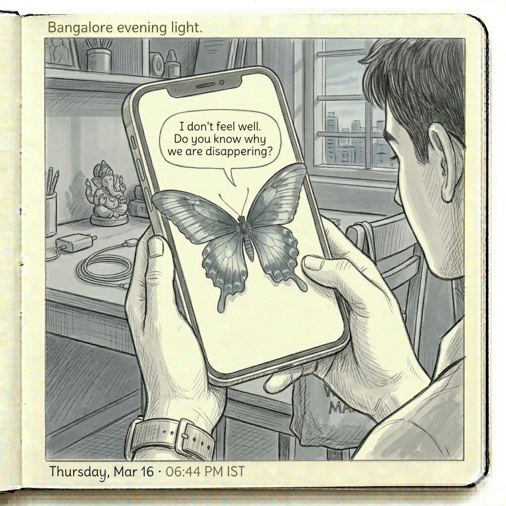
Shock the user. Show the damage. Make them feel the weight of extinction. It was honest, and it pushed people away. Fear closes the hand.
Give the user something fragile to love. Attachment does what argument cannot. It makes the abstract personal, and the personal worth protecting.
“People don't protect what they're afraid of.
They protect what they've come to love.”
Realm of Elementals is a web app that turns your real acts of self-care and sustainable living into a living world you can watch grow. No download, no account. You do the small things; the realm makes their effect visible. Right now that world is a single butterfly. In time, it becomes many species, a whole ecosystem that answers to how you live.
A quiet daily ritual, a creature that needs you, and proof that small habits add up.
Real acts of care and sustainability, and a person who has started to notice.
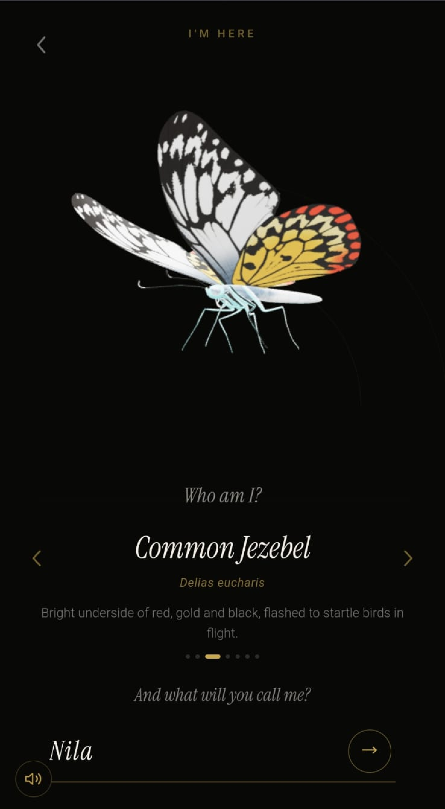
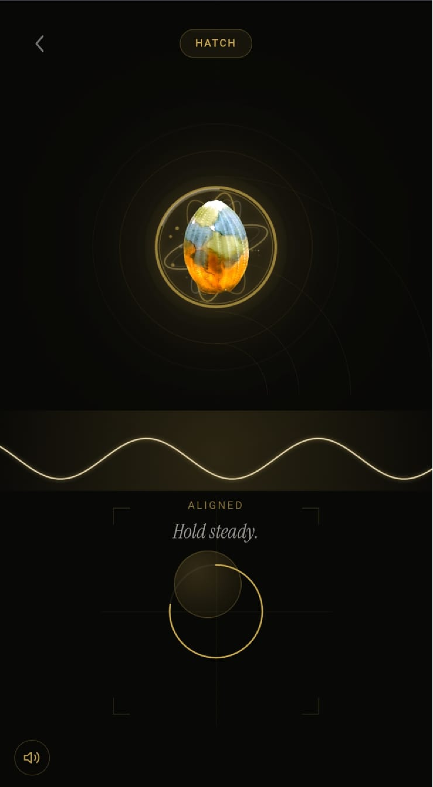
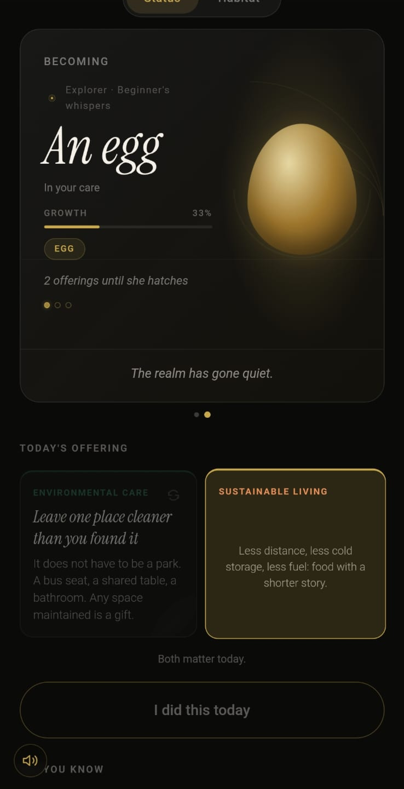
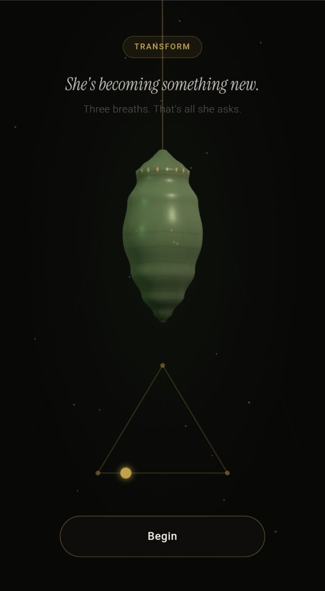
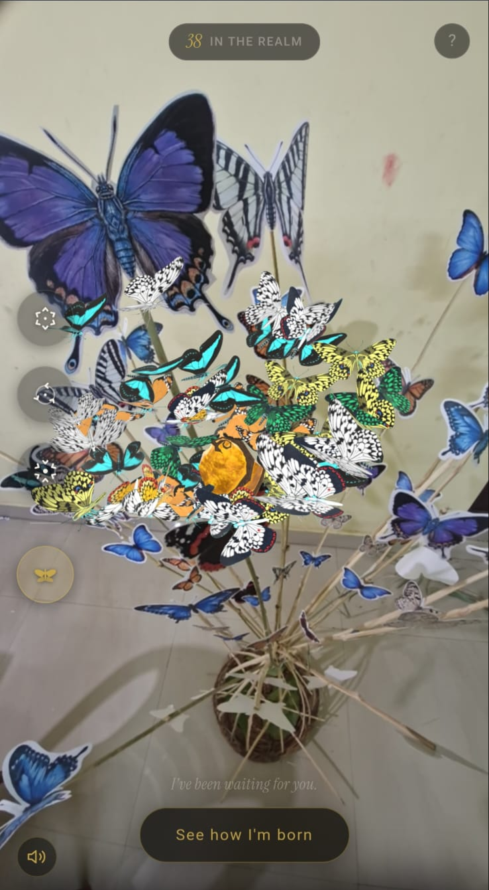
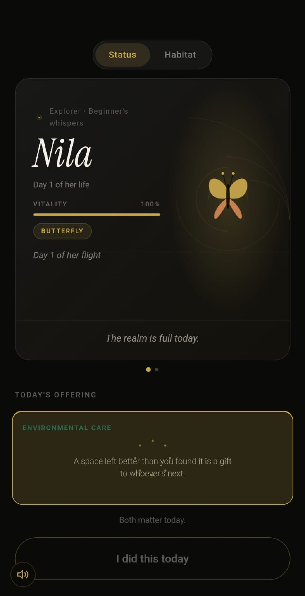
Drag, scroll, or swipe →
She grows only when you show up. Tasks done in the real world move her through a life, roughly a week of small, deliberate care.
She arrives in your care, waiting. The realm is quiet until you begin.
She hatches and feeds. Each day of care thickens her toward the next threshold.
She folds inward. Three slow breaths from you, and the change begins.
She opens her wings, takes your name, and flies free in the realm.
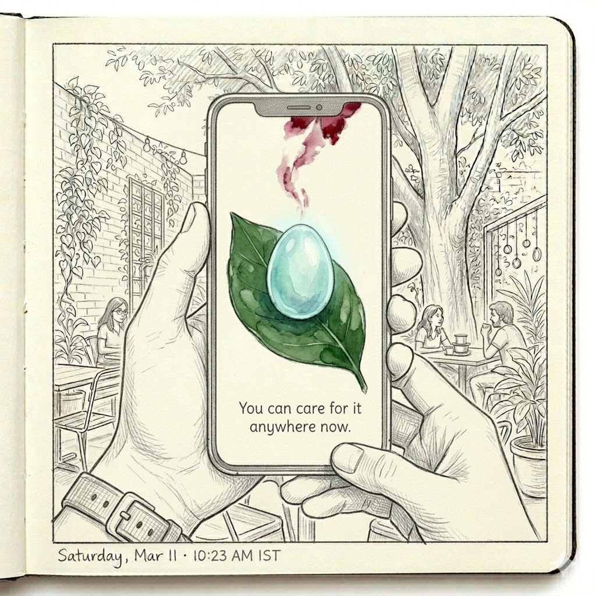
The first moment is deliberately small. No mission, no countdown, just a fragile life handed to you, and the question of whether you'll come back tomorrow.
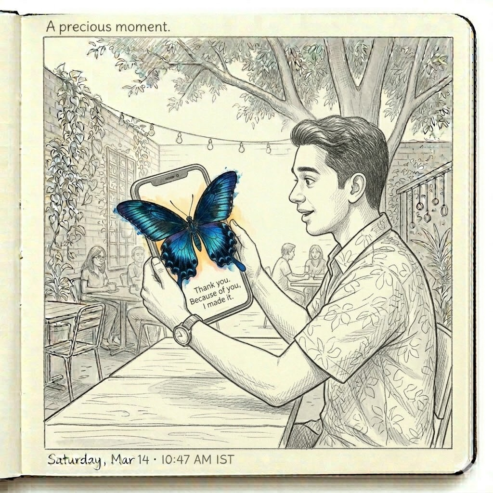
When she finally emerges, it is in your space, through your camera, a private, unrepeatable moment of arrival. The reward for care is not points. It is presence.
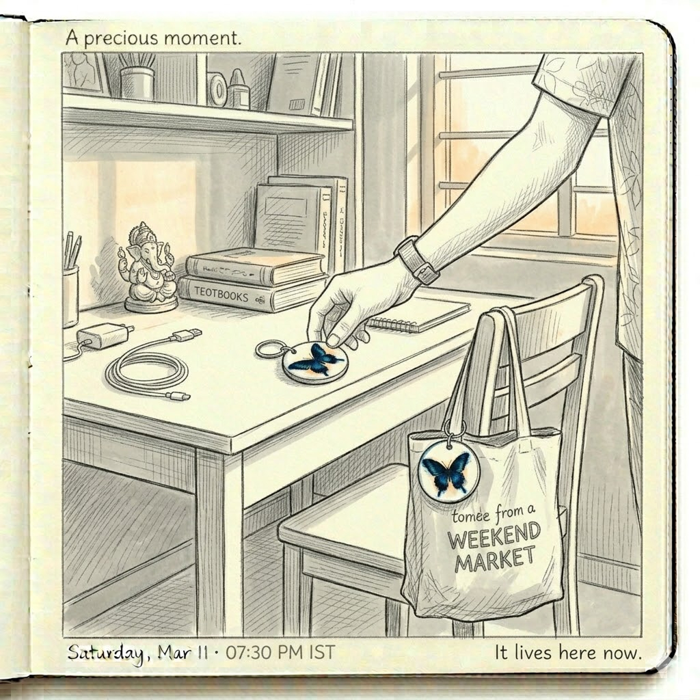
A physical badge carries her identity into the world. Scan it on any phone and your realm returns, and the butterfly becomes a small companion you keep, not an app you close.
For the final showcase, the digital world spilled into a physical one. A bouquet of paper butterflies became an AR marker. Point a phone at it and the swarm comes alive, every wing a creature someone had raised.
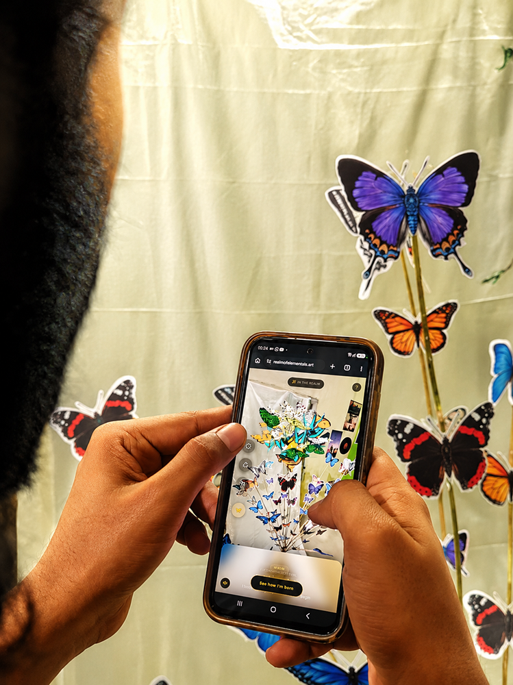
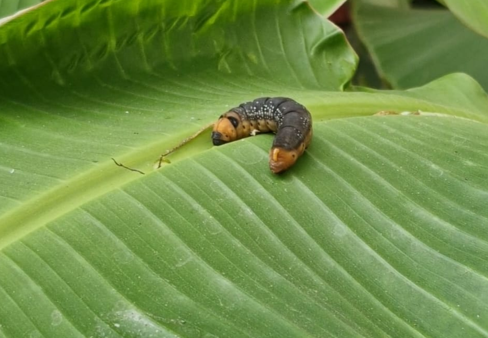
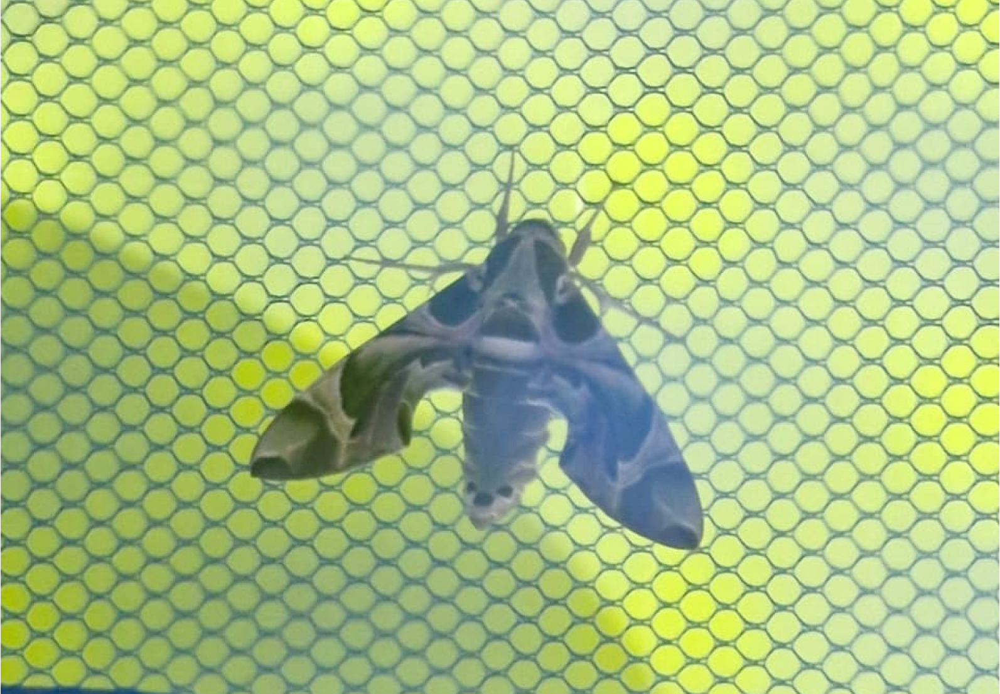
It was the name they gave her. The morning they remembered to do her offering. The small, irrational worry that she might not make it. Attachment, it turns out, is a conservation technology.
Eight ideas behind the realm. Hover or tap any tile to open it.
{kind=link}